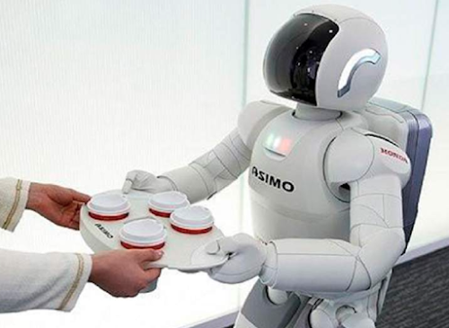

Robots industriales
Los robots industriales son robots que se utilizan en la fabricación y producción de bienes. Estos robots son programables y pueden realizar tareas repetitivas de alta precisión. Los robots industriales se utilizan en una variedad de industrias, incluyendo la automotriz, la electrónica y la alimentaria Además de ser programables y capaces de realizar tareas repetitivas, los robots industriales también son capaces de trabajar en entornos peligrosos para los humanos, como en la manipulación de productos químicos o en ambientes con alta temperatura. Los robots industriales también son capaces de trabajar durante largas horas sin cansarse y sin errores, lo que mejora la eficiencia y productividad en la producción. Los robots industriales pueden ser de diferentes tipos, incluyendo robots SCARA, robots cartesianos, robots delta, robots colaborativos y robots móviles. Cada tipo de robot tiene sus propias características y ventajas, y la elección del robot dependerá de las necesidades específicas de la industria. En la actualidad, la automatización industrial y el uso de robots industriales se están volviendo cada vez más comunes en la industria, y se espera que el mercado de robots industriales siga creciendo en el futuro Además de realizar tareas repetitivas, los robots industriales también pueden trabajar en entornos peligrosos o difíciles para los humanos, como ambientes con alta temperatura, humedad o radiación. Estos robots pueden ser programados para trabajar en equipos, lo que aumenta la eficiencia y la productividad en la línea de producción. Los robots industriales también pueden ser equipados con sensores para detectar y corregir errores en tiempo real, lo que ayuda a evitar costosos errores de producción.
Robots móviles
Los robots móviles son robots que pueden moverse de un lugar a otro de forma autónoma. Estos robots se utilizan en una variedad de aplicaciones, como la exploración espacial, la inspección de tuberías y la limpieza de edificios. Los robots móviles a menudo utilizan sistemas de sensores y navegación para detectar y evitar obstáculos los robots móviles pueden tener diferentes tipos de movilidad, como ruedas, patas o incluso hélices. Algunos robots móviles también pueden ser controlados de forma remota y se utilizan en aplicaciones militares o de seguridad. Estos robots pueden ser diseñados para realizar tareas específicas, como transportar cargas pesadas o realizar inspecciones en lugares de difícil acceso. La programación de robots móviles es una disciplina en constante evolución y se están desarrollando nuevas tecnologías para mejorar la autonomía y el rendimiento de estos robots Los robots móviles también se utilizan en la logística y la gestión de almacenes, donde pueden transportar y clasificar productos de forma eficiente y autónoma. Además, en la agricultura, los robots móviles pueden ser utilizados para la siembra y la cosecha de cultivos, reduciendo la necesidad de mano de obra y aumentando la eficiencia. Los robots móviles pueden ser controlados por un operador humano o pueden ser completamente autónomos, utilizando algoritmos de inteligencia artificial y aprendizaje automático para tomar decisiones en tiempo real. En general, los robots móviles son una herramienta versátil y eficiente para una amplia gama de aplicaciones en diversas industrias.
Robots humanoides
Los robots humanoides son robots que tienen un aspecto y comportamiento similar al de los seres humanos. Estos robots se utilizan en una variedad de aplicaciones, como la investigación científica y la industria del entretenimiento. Los robots humanoides a menudo tienen características como la capacidad de hablar y la capacidad de moverse de forma similar a la de los seres humanos Además de la investigación científica y la industria del entretenimiento, los robots humanoides también se utilizan en la asistencia a personas con discapacidades físicas, así como en la exploración de ambientes peligrosos o de difícil acceso para los seres humanos, como el espacio o el fondo del océano. Los robots humanoides también son útiles en situaciones donde se requiere la interacción física con seres humanos, como en la atención médica y la educación. Sin embargo, la creación de robots humanoides avanzados sigue siendo un desafío técnico debido a las complejidades del movimiento y la interacción humana,Los robots humanoides también se utilizan en aplicaciones médicas, como en la rehabilitación de pacientes con discapacidades físicas o en la asistencia a personas mayores. Además, pueden ser utilizados en operaciones de rescate y ayuda en situaciones de emergencia, donde su capacidad para caminar en terrenos difíciles y manipular objetos puede ser muy útil. Sin embargo, la construcción de robots humanoides es un desafío técnico y aún queda mucho por hacer para que puedan ser utilizados en aplicaciones prácticas de manera efectiva.

Robots de servicio
Los robots de servicio son robots que se utilizan para proporcionar servicios a las personas. Estos robots se utilizan en una variedad de aplicaciones, como la atención al cliente, la educación y la atención médica. Los robots de servicio a menudo tienen características como la capacidad de reconocimiento de voz y la capacidad de movimiento autónomo,Los robots de servicio son diseñados para asistir a las personas en sus actividades diarias. Estos robots pueden realizar tareas simples y repetitivas, liberando a las personas de las tareas aburridas y tediosas. También pueden ser utilizados para mejorar la eficiencia y reducir los costos en industrias como la hospitalaria y hotelera, donde los robots de servicio pueden realizar tareas de limpieza, entrega de alimentos y bebidas, y asistencia en la habitación. Además, los robots de servicio pueden ser programados para interactuar con los humanos de manera amigable y personalizada, lo que los hace útiles en aplicaciones como el cuidado de personas mayores o enfermas. Con la inteligencia artificial y los avances en la tecnología de sensores, los robots de servicio pueden detectar y responder a las necesidades de las personas de manera más precisa y eficiente,Además de las aplicaciones mencionadas anteriormente, los robots de servicio también se utilizan en la industria de la hospitalidad, como en hoteles y restaurantes, para realizar tareas como la limpieza y el servicio de alimentos. También se están explorando nuevas aplicaciones en el campo de la robótica asistencial, como el uso de robots para ayudar en la atención domiciliaria de personas mayores o con discapacidades. Los robots de servicio están diseñados para interactuar con los humanos de una manera segura y eficiente, y se espera que tengan un papel cada vez más importante en la prestación de servicios en una variedad de industrias.
